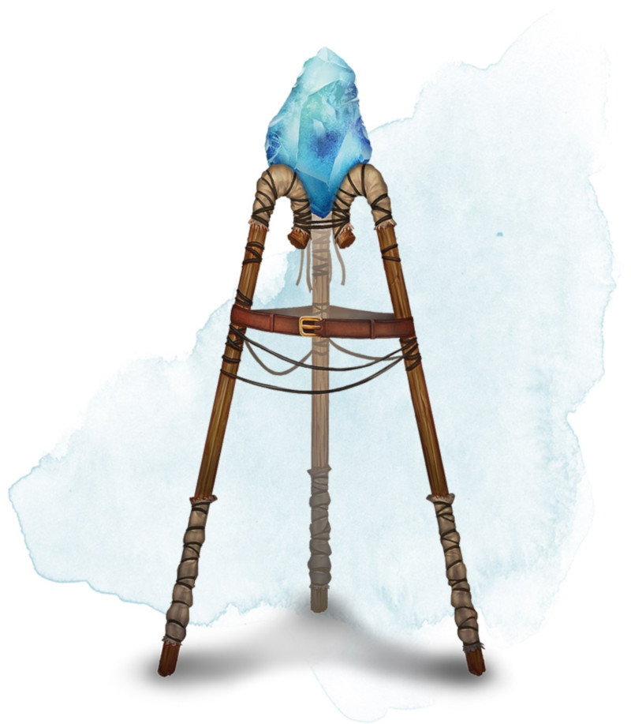

Gem of Brightness
Wondrous item, uncommon
This prism has 50 charges. While you are holding it, you can use an action to speak one of three command words to cause one of the following effects:
• The first command word causes the gem to shed bright light in a 30-foot radius and dim light for an additional 30 feet. This effect doesn't expend a charge. It lasts until you use a bonus action to repeat the command word or until you use another function of the gem.
• The second command word expends 1 charge and causes the gem to fire a brilliant beam of light at one creature you can see within 60 feet of you. The creature must succeed on a DC 15 Constitution saving throw or become blinded for 1 minute. The creature can repeat the saving throw at the end of each of its turns, ending the effect on itself on a success.
• The third command word expends 5 charges and causes the gem to flare with blinding light in a 30-foot cone originating from it. Each creature in the cone must make a saving throw as if struck by the beam created with the second command word.
When all of the gem's charges are expended, the gem becomes a nonmagical jewel worth 50 gp.
• The first command word causes the gem to shed bright light in a 30-foot radius and dim light for an additional 30 feet. This effect doesn't expend a charge. It lasts until you use a bonus action to repeat the command word or until you use another function of the gem.
• The second command word expends 1 charge and causes the gem to fire a brilliant beam of light at one creature you can see within 60 feet of you. The creature must succeed on a DC 15 Constitution saving throw or become blinded for 1 minute. The creature can repeat the saving throw at the end of each of its turns, ending the effect on itself on a success.
• The third command word expends 5 charges and causes the gem to flare with blinding light in a 30-foot cone originating from it. Each creature in the cone must make a saving throw as if struck by the beam created with the second command word.
When all of the gem's charges are expended, the gem becomes a nonmagical jewel worth 50 gp.
Dungeon Master´s Guide (SRD)
